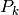
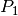
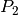
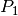
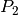

Introduction¶
The aim of this document is to report details of the internal of GetFEM++ useful for developers that have no place in the user documentation. It is also to outline the main prospects for the future development of GetFEM++. A list of modifications to be done and main tasks is updated on Savannah https://savannah.nongnu.org/task/?group=getfem.
The GetFEM++ project focuses on the development of an open source generic finite element library. The goal is to provide a finite element framework which allows to easily build numerical code for the modelisation of system described by partial differential equations (p.d.e.). A special attention is paid to the flexibility of the use of the library in the sense that the switch from a method offered by the library to another is made as easy as possible.
The major point allowing this, compared to traditional finite element codes, is the complete separation between the description of p.d.e. models and finite element methods. Moreover, a separation is made between integration methods (exact or approximated), geometric transformations (linear or not) and finite element methods of arbitrary degrees described on a reference element. GetFEM++ can be used to build very general finite elements codes, where the finite elements, integration methods, dimension of the meshes, are just some parameters that can be changed very easily, thus allowing a large spectrum of experimentations. Numerous examples are available in the tests directory of the distribution.
The goal is also to make the addition of new finite element method
as simple as possible. For standard method, a description of the
finite element shape functions and the type of connection of degrees
of freedom on the reference element is sufficient. Extensions are
provided for Hermite elements, piecewise polynomial, non-polynomial,
vectorial elements and XFem. Examples of predefined
available methods are  on simplices in arbitrary degrees and
dimensions,  on parallelepipeds, , 
with bubble functions, Hermite elements, elements with hierarchic
basis (for multigrid methods for instance),
discontinuous or , XFem, Argyris, HCT, Raviart-Thomas.
on parallelepipeds, , 
with bubble functions, Hermite elements, elements with hierarchic
basis (for multigrid methods for instance),
discontinuous or , XFem, Argyris, HCT, Raviart-Thomas.
The library also includes the usual tools for finite elements such as assembly procedures for classical PDEs, interpolation methods, computation of norms, mesh operations, boundary conditions, post-processing tools such as extraction of slices from a mesh ...
The aim of the GetFEM++ project is not to provide a ready to use finite element code allowing for instance structural mechanics computations with a graphic interface. It is basically a library allowing the build of C++ finite element codes. However, the Python, Scilab and matlab interfaces allows to easily build application coupling the definition of the problem, the finite element methods selection and the graphical post-processing.
Copyright © 2004-2018 GetFEM++ project.
The text of the GetFEM++ website and the documentations are available for modification and reuse under the terms of the GNU Free Documentation License
GetFEM++ is free software; you can redistribute it and/or modify it under the terms of the GNU Lesser General Public License as published by the Free Software Foundation; either version 3 of the License, or (at your option) any later version along with the GCC Runtime Library Exception either version 3.1 or (at your option) any later version. This program is distributed in the hope that it will be useful, but WITHOUT ANY WARRANTY; without even the implied warranty of MERCHANTABILITY or FITNESS FOR A PARTICULAR PURPOSE. See the GNU Lesser General Public License and GCC Runtime Library Exception for more details. You should have received a copy of the GNU Lesser General Public License along with this program; if not, write to the Free Software Foundation, Inc., 51 Franklin St, Fifth Floor, Boston, MA 02110-1301, USA.

前のトピックへ
次のトピックへ
How to contribute / Git repository on Savannah
Download
Main documentations
- GetFEM++ User documentation
- Python Interface
- Matlab Interface
- Scilab Interface
- Gmm++
- GetFEM++ project